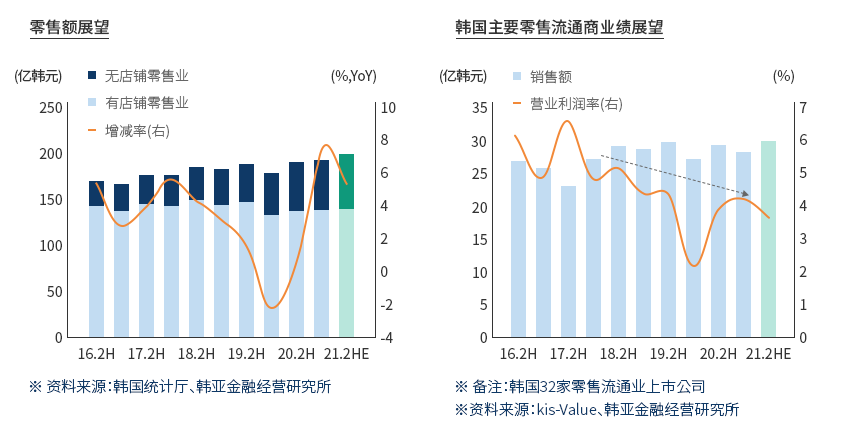
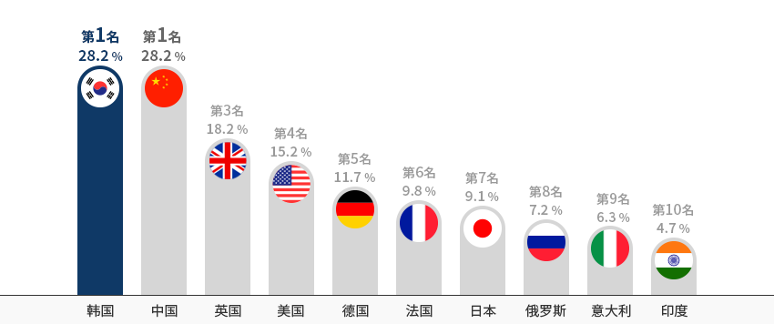
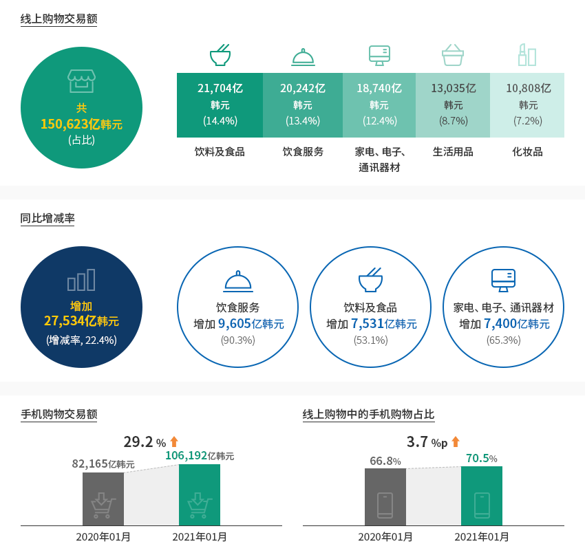
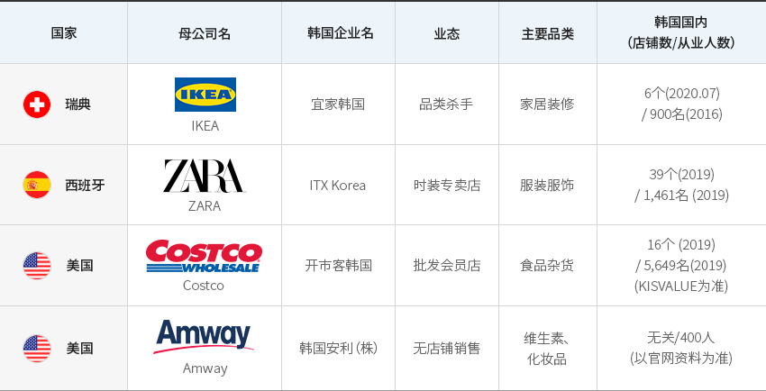
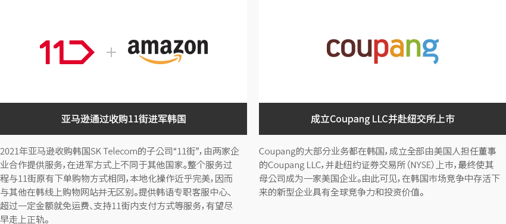
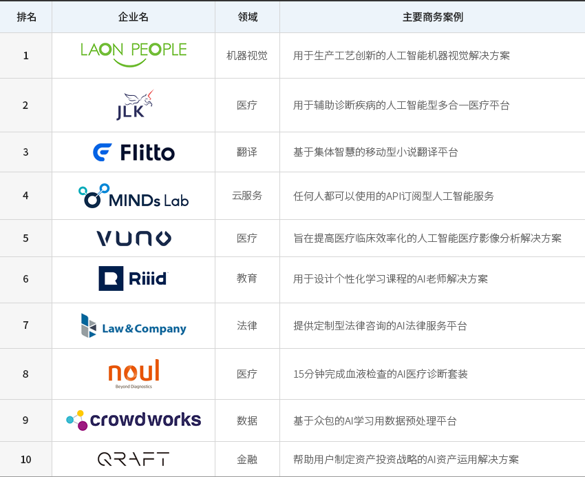
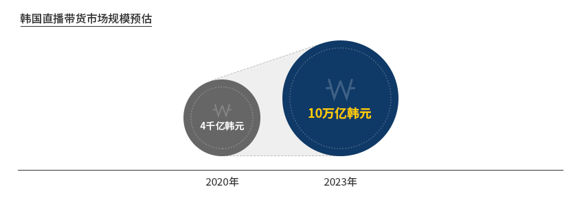
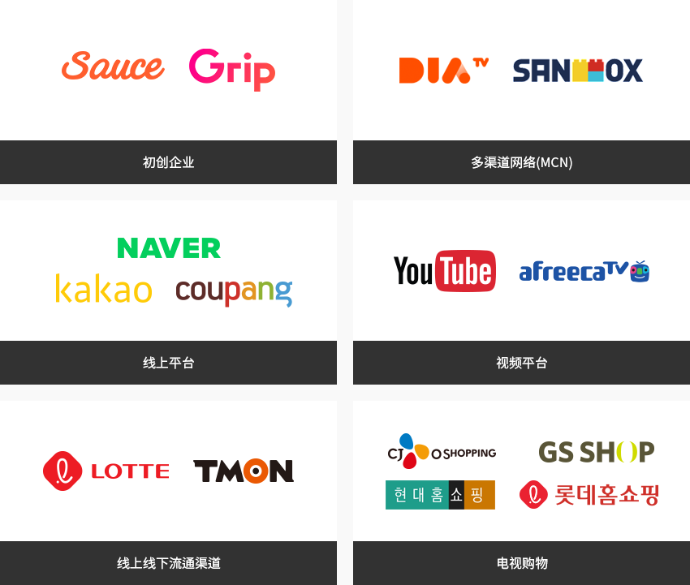

流通
- Home
- Why KOREA
- 产业
- 流通
-
新冠肺炎疫情证明 韩国本土供应链牢不可破 关闭内容新冠肺炎疫情证明 韩国本土供应链牢不可破大部分国家都因新冠肺炎疫情而出现囤货现象，但韩国却完全没有，其原因就是本土供应链牢不可破。
这得益于本土供应链覆盖采购、制造、流通、销售等环节，在危机中岿然不动。
大部分日用品都产自本土，线上线下店铺众多，快递和配送系统冠绝全球，消费者历经多次危机，
采购网络覆盖全球各地……正是这一切铸就了强有力的韩国本土供应链。其结果，2020年零售额相对稳定，在一定程度上带动生产。
从整体零售额指数来看，若以2015年为100，则2021年2月已达115.2，
接近新冠肺炎疫情之前2019年12月的116.2。"新冠肺炎疫情下零售额相对稳定"零售额展望(无店铺零售业, 有店铺零售业, 增减率(右)) ※ 资料来源：韩国统计厅、韩亚金融经营研究所韩国主要零售流通商业绩展望 (销售额, 营业利润率(右)) ※ 备注：韩国32家零售流通业上市公司
※ 资料来源：kis-Value、韩亚金融经营研究所 ※ 资料来源：韩亚证券
※ 资料来源：韩亚证券 -
数字科技助力 非接触式零售业克服危机 打开内容数字科技助力 非接触式零售业克服危机此前韩国零售市场上占比最高的业态就是线上购物，而新冠肺炎疫情进一步促使非接触式零售需求增加。
线上购物包含电视购物、电脑端线上购物、手机端线上购物。
电脑端和手机端电子商务占比已于2019年位居世界第一。"电子商务在零售流通市场上的占比(2019)"
※ 资料来源：欧睿信息咨询有限公司（Euromornitor International） (2019)特别的是韩国电视购物市场规模远超其他国家，而这也属于非接触式零售业。
电视购物、电脑端线上购物、手机端线上购物全面增长，挽回了线下零售的低迷局面。
手机端线上购物的增长尤为引人注目，2021年1月销售额达到10.6万亿韩元，同比增长29.2%。
据统计厅数据，手机端在线上购物中的占比已经超过70%。"2020年韩国零售业概况"2020年韩国零售业概况 年度, 同比增减率 2019 2020 同比增减率 线上购物小计 149.4 176.2 17.94% 电视购物 14.1 15.1 7.09% 电脑购物 48.0 52.5 9.37% 手机购物 87.3 108.6 24.40% 大型超市 32.4 33.8 4.32% 百货店 30.4 27.4 -9.87% 超市 44.2 46.5 5.20% 便利店 25.7 26.5 3.11% 专卖店 135.4 122.0 -9.90% 上门推销·传销 15.4 14.8 -3.90% 杂货业（Grocery）总计 417.5 447.2 7.11% ※ 资料来源：KIET产业经济 -
韩国流通市场 借助线上购物及手机购物实现持续发展 打开内容韩国流通市场 借助线上购物及手机购物实现持续发展韩国非接触式零售市场上有一点值得特别注意，即冷链完善，快递服务迅捷，
促使饮料食品和餐饮服务领域的交易额急剧增长。餐饮服务同比增长90.3%，饮料食品也同比增长53%，
二者在整个线上购物中的占比达到27.8%。这一成绩得益于支付系统百花齐放、餐饮服务市场平台丰富多样、
线上促销推广紧跟潮流、互联网全球最快、免费服务、移动电话普及率全球最高等因素。"韩国线上市场及手机购物"线上购物交易额 - 共 15万 623亿韩元(占比)- 饮料及食品 - 2万 1,704亿韩元(14.4%)
- 饮食服务 - 2万 242亿韩元(13.4%)
- 家电、电子、通讯器材 - 1万 8,740亿韩元(12.4%)
- 生活用品 - 1万 3,035亿韩元(8.7%)
- 化妆品 - 1万 808亿韩元(7.2%)
同比增减率 - 2万 7,534亿韩元 (增减率, 22.4%)- 饮食服务 - 9,605亿韩元 (90.3%)
- 饮料及食品 - 7,531亿韩元 (53.1%)
- 家电、电子、通讯器材 - 7,400亿韩元 (65.3%)
- 手机购物交易额 - 2020年 1月 : 8万 2,165亿韩元 > 2021年 01月 : 10万 6,912亿韩元 (29.2% 增减)
- 线上购物中的手机购物占比 - 2020年 1月 : 66.8% > 2021年 01月 : 70.5% (3.7%p 增减)
※ 资料来源：韩国统计厅（2021年1月）《2021年1月及线上购物动向》 -
跨国企业进驻韩国后 销售成绩处于上游水平 打开内容跨国企业进驻韩国后 销售成绩处于上游水平韩国零售企业的特点是布局众多渠道，同时运营电视购物、手机购物、电脑购物、百货店、大型超市、
超市、便利店等渠道。目前，相关企业纷纷着力建设全渠道，
因而很难在韩国找到只在特定业态具有优势的企业。海外企业正在填补上述空白，如早年进军韩国的宜家（IKEA）、飒拉（ZARA）、开市客（Costco）和
2021年来韩的亚马逊（Amazon）。诸多跨国流通企业在韩国成功营商，例如宜家成功进军韩国市场，借助坚挺的销售业绩，
逐步增设店铺。在全球开市客店铺中，单店销售额最高的店铺就是韩国分店（首尔良才店）。"进军韩国的主要全球流通企业"进军韩国的主要全球流通企业 国家, 母公司名, 韩国企业名, 业态, 主要品类, 韩国国内（店铺数/从业人数） 国家 母公司名 韩国企业名 业态 主要品类 韩国国内（店铺数/从业人数） 瑞典 IKEA 宜家韩国 品类杀手 家居装修 6家(‘20.07) / 900名(‘16) 西班牙 ZARA ITX韩国 时装专卖店 服装服饰 39家(‘19) / 1,461名 (‘19) 美国 Costco 开市客韩国 批发会员店 食品杂货 16家 (‘19) / 5,649名(‘19) (KISVALUE为准) 美国 Amway 韩国安利（株） 无店铺销售 维生素、化妆品 Not relevant/400名 (以官网资料为准)
※ 资料协助：崇实大学IT流通物流学科- 亚马逊通过收购11街进军韩国 - 2021年亚马逊收购韩国SK Telecom的子公司“11街”，由两家企业合作提供服务，在进军方式上不同于其他国家。整个服务过程与11街原有下单购物方式相同，本地化操作近乎完美，因而与其他在韩线上购物网站并无区别。提供韩语专职客服中心、超过一定金额就免运费、支持11街内支付方式等服务，有望尽早走上正轨。
- 成立Coupang LLC并赴纽交所上市 - Coupang的大部分业务都在韩国，成立全部由美国人担任董事的Coupang LLC，并赴纽约证券交易所（NYSE）上市，最终使其母公司成为一家美国企业。由此可见，在韩国市场竞争中存活下来的新型企业具有全球竞争力和投资价值。
-
流通和物流领域 数字转型支持服务 打开内容流通和物流领域 数字转型支持服务流通产业是一个数字转型（Digital Transformation）突飞猛进的产业。
韩国的大型零售企业纷纷着力建设全渠道，对人工智能、大数据、智能仓库等进行巨额投资。
然而，韩国本土却鲜有企业能顺利为其提供支持，流通和物流领域更是如此。
海外专业企业在支持数字转型方面经验丰富，对其而言，韩国市场增长潜力巨大，但目前尚未得到开发。"韩国人工智能领域十大初创企业"韩国人工智能领域十大初创企业 排名, 企业名, 领域, 主要商务案例 排名 企业名 领域 主要商务案例 1 LAON PEOPLE 机器视觉 用于生产工艺创新的人工智能机器视觉解决方案 2 JLK 医疗 用于辅助诊断疾病的人工智能型多合一医疗平台 3 Flitto 翻译 基于集体智慧的移动型小说翻译平台 4 MINDs Lab 云服务 任何人都可以使用的API订阅型人工智能服务 5 VUNO 医疗 旨在提高医疗临床效率化的人工智能医疗影像分析解决方案 6 Riiid 教育 用于设计个性化学习课程的AI老师解决方案 7 Law&Company 法律 提供定制型法律咨询的AI法律服务平台 8 noul 医疗 15分钟完成血液检查的AI医疗诊断套装 9 crowd works 数据 基于众包的AI学习用数据预处理平台 10 QRAFT 金融 帮助用户制定资产投资战略的AI资产运用解决方案
-
韩国消费者 包容新技术 打开内容韩国消费者 包容新技术韩国消费者对新技术和销售方式持非常开放的态度。
韩国消费者教育水平高，好奇心强，容易适应飞速创新的数字时代。
Coupang之所以能成为手机购物的代名词，离不开这种韩国消费者基础。
视频商务和元宇宙等新型渠道陆续登场，要么在韩国市场上已经广为人知，要么投资已经初具规模。
同时，韩国市场堪称一个能衡量新商业模式扩散潜力的最佳试验田。"韩国直播带货市场" 2023年 10万亿韩元">
"直播带货相关企业"- 初创企业 - Sauce, Grip
- 多渠道网络(MCN) - DIA TV, SANDBOX
- 线上平台 - Naver, Kakao, coupang
- 视频平台 - Youtube, afreecaTV
- 线上线下流通渠道 - LOTTE, TMON
- 电视购物 - CJ O shopping, GS SHOP, Hyundae Homeshopping, Lotte Homeshopping
※ 资料来源：教保证券


Invest KOREA
流通/物流项目经理
姜南薰
服务产业引进组
T.+82-2-3460-3285